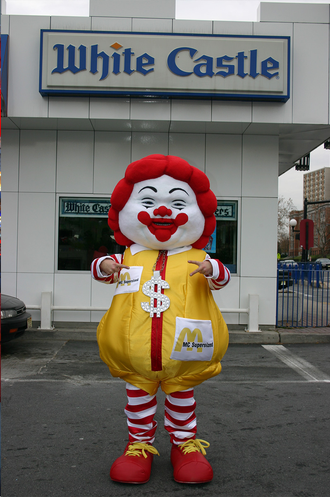

Provenance
Private collection.
Exhibitions
Mythographic Vicissitudes, FIFTY24SF Gallery, San Francisco, California, US, January 8–29, 2009.
The Hu$tle, The powerHouse Arena, Brooklyn, New York, US, May 28, 2008.
Notes
This work references Ronald McDonald.
Costumed live model photographed by Ron English as reference for this work.
Ancillary Documentation
The following materials document source imagery and the live-model reference associated with the work.


